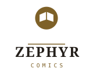

铜印 · 开书。一坨米金圆印，中间凿出一本摊开的书 —— 印章是"这属于我"，
摊开的书是"在读"。图形不画分格、不画风、不画抽象线：它就说一件事，而且缩到 24px 还认得出。
全套改用浅色系（纸底 + 墨 + 深米金），颜色与字阶仍全部来自
lib/theme/zephyr_theme.dart，没有引入任何新色值或字体资源。
#F4EFE6）—— 启动器会在它上面套自己的遮罩；
前景层把 64 格压进 108dp 画布中央的 72dp（scale 1.125 / translate 18）。
单色层只留书、不留圆印：主题图标是单色染色，一圈实心会被染成一块饼。


| 用途 | 值 | 来源 |
|---|---|---|
| 底板 / 背景层 | #F4EFE6 | 主题浅色 surface |
| 底板描边 | #DCD5C7 | 主题浅色 outlineVariant |
| 圆印 / 书 | #7E6128 | 主题浅色 primary |
| 浅底字标 | #241F1A | 主题浅色 onSurface |
| 深底字标 | #EDE6DA | 主题 onSurface |
| 深底细线 | #C9A86A | 主题 primary |
#7E6128 是 5.05:1。
这两条数字来自 zephyr_theme.dart 的注释与主题测试。
| 角色 | 字体 |
|---|---|
| ZEPHYR（display） | serif 600，字距 +2.2px |
| COMICS（metadata） | monospace，字距 +4.4px |
mark-dark / mark-light，不要给彩色版去饱和。android/app/src/main/res/mipmap-<density>/ic_launcher.png（48/72/96/144/192）由
flutter test tool/export_brand_icons.dart 从 brand/logo/icon.svg 重新生成；
两次运行字节一致，且导出前会校验尺寸与采样像素，坏图不会覆盖好图。mipmap-anydpi-v26/ic_launcher.xml 引用 @color/ic_launcher_background（纸色）、
@drawable/ic_launcher_foreground（铜印）、@drawable/ic_launcher_monochrome（书）。test/brand/launcher_icon_test.dart 是漂移守卫：它把四个地方的几何（SVG、导出器、两个 drawable）
锁在一起，并把每个 PNG 与一次实时渲染做像素比对 —— 改品牌文件却忘了同步，flutter test 会先报。